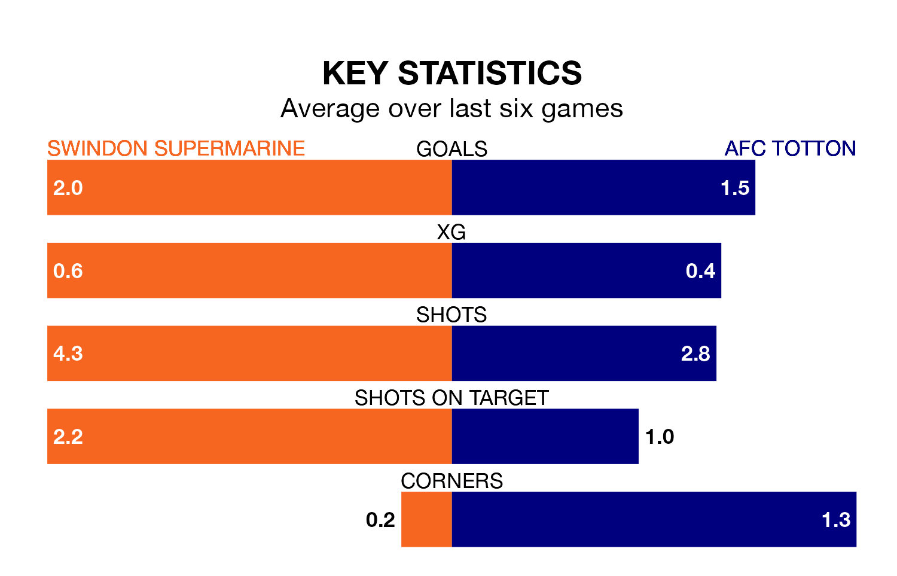

AFC Totton are strong favourites to take all three points despite Swindon Supermarine's home advantage in Saturday's match at the Webbs Wood Stadium.
*Betting Company* are offering odds of 1.67 on Totton sealing the win, with the visitors sitting fifth in Southern League Premier South table.
Swindon Supermarine, who are 20th in the league and 19 points behind Totton, are priced at 3.7 to win. A draw is set at 4.1.
With 53 goals in 26 games so far this season, Totton are scoring more than average in the league with 2.0 goals per game. And they are conceding fewer than average, letting in 33 goals at a rate of 1.3 per game.
Swindon Supermarine, meanwhile, are average scorers, with 1.7 goals per game. They have conceded 2.4 goals per game.
The hosts are in disappointing form in Southern League Premier South, with two wins and four losses from their last six games.
With two wins and three draws over that period, the away side's form is better – they have taken nine points from 18, compared to Swindon Supermarine's six.
Swindon Supermarine's last match was on January 27, a 3-2 loss against Hungerford Town.
Totton drew 3-3 with Hendon last time out, on Tuesday.
Updated: 10:40 (UTC), 01/02/24